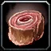
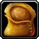
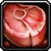
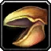
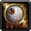
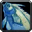
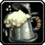
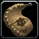

In brief
Blizzard announced over 600 new recipes without publishing a complete list. This page gathers the 123 Cooking recipes recorded in the game files (client 1.60.1.70862, consulted on 12 November 2026). Names and required skills come from the game files. An acquisition marked “unknown” remains to be confirmed. Tables are grouped by required skill bracket. When acquisition, source or zone is not given in the data consulted, the cell says so. No drop rates are repeated; none were given.[1][2][4]
Key points
- 123 Cooking recipes listed below, from the game files (client 1.60.1.70862, 12 November 2026); acquisition marked “unknown” remains to be confirmed.[4] Game data (client 1.60.1.70862)
- Acquisition given in the game files: trainer 15, vendor 2, drop 1, quest 22, unknown 83.[4] Game data (client 1.60.1.70862)
- Blizzard has not published the complete recipe list, nor trainers, vendors, prices or drop rates.[1][2]
- Reagents of 119 recipes and 105 materials linked to their “where to find it” card (game files).[5] Game data (client 1.60.1.70862)
How to read this list
This list is not official. Blizzard has not published the details of this profession’s recipes (vendors, trainers, monsters, zones, prices, drop rates). The names and skills below come from the game files (client 1.60.1.70862). An acquisition marked “unknown” remains to be confirmed. The French name is the in-game localization when one was found; otherwise the English name is used in both languages. “Trainer” also covers recipes listed as learned automatically with the profession. An overview page already online, Recipes and advanced blueprints (/en/professions/recipes-and-advanced-blueprints/), restates the official acquisition rules and the lootable recipes already shown by zone.[1][2][4]
Skill 1–75 — 33 recipes (game data)
| Recipe | Required skill | How obtained | Source | Zone | Status |
|---|---|---|---|---|---|
| Basic Campfire | 1 | trainer | learned automatically with the profession | not recorded | game data |
| Basic Campfire | 1 | trainer | profession trainer (unnamed) | not recorded | game data |
| Brilliant Smallfish | 1 | unknown | not recorded | not recorded | game data — acquisition to be confirmed |
| Crispy Bat Wing | 1 | unknown | not recorded | not recorded | game data — acquisition to be confirmed |
| Gingerbread Cookie | 1 | unknown | not recorded | not recorded | game data — acquisition to be confirmed |
| Slitherskin Mackerel | 1 | unknown | not recorded | not recorded | game data — acquisition to be confirmed |
| Kaldorei Spider Kabob | 10 | quest | Recipe of the Kaldorei | not recorded | game data |
| Scorpid Surprise | 20 | unknown | not recorded | not recorded | game data — acquisition to be confirmed |
| Beer Basted Boar Ribs | 25 | quest | Beer Basted Boar Ribs | Dun Morogh (Alliance) | game data |
| Peace Tea | 25 | unknown | not recorded | not recorded | game data — acquisition to be confirmed |
| Skywall Souffle | 25 | quest | Restocking the Larders | Isle of Zephras | game data |
| Tasty Raptor Bites | 25 | unknown | not recorded | not recorded | game data — acquisition to be confirmed |
| Venomous Smoothie | 25 | unknown | not recorded | not recorded | game data — acquisition to be confirmed |
| Charred Wolf Meat | 35 | trainer | profession trainer (unnamed) | not recorded | game data |
| Egg Nog | 35 | unknown | not recorded | not recorded | game data — acquisition to be confirmed |
| Herb Baked Egg | 35 | trainer | profession trainer (unnamed) | not recorded | game data |
| Pincer Bites | 35 | quest | Crab Season | not recorded | game data |
| Roasted Boar Meat | 35 | trainer | profession trainer (unnamed) | not recorded | game data |
| Roasted Kodo Meat | 35 | unknown | not recorded | not recorded | game data — acquisition to be confirmed |
| Smoked Bear Meat | 40 | unknown | not recorded | not recorded | game data — acquisition to be confirmed |
| Spiced Wolf Meat | 40 | trainer | profession trainer (unnamed) | not recorded | game data |
| Fillet of Frenzy | 50 | unknown | not recorded | not recorded | game data — acquisition to be confirmed |
| Goretusk Liver Pie | 50 | quest | Goretusk Liver Pie | not recorded | game data |
| Loch Frenzy Delight | 50 | unknown | not recorded | not recorded | game data — acquisition to be confirmed |
| Longjaw Mud Snapper | 50 | unknown | not recorded | not recorded | game data — acquisition to be confirmed |
| Rainbow Fin Albacore | 50 | unknown | not recorded | not recorded | game data — acquisition to be confirmed |
| Strider Stew | 50 | quest | Easy Strider Living | not recorded | game data |
| Blood Sausage | 60 | quest | Thelsamar Blood Sausages | not recorded | game data |
| Thistle Tea | 60 | unknown | not recorded | not recorded | game data — acquisition to be confirmed |
| Breakfast Omelette | 75 | unknown | not recorded | not recorded | game data — acquisition to be confirmed |
| Critter Cookie | 75 | trainer | profession trainer (unnamed) | not recorded | game data |
| Twice-Spiced Raptor Slice | 75 | quest | Changing Tastes | not recorded | game data |
| Westfall Stew | 75 | quest | Westfall Stew | not recorded | game data |
Skill 76–150 — 32 recipes (game data)
| Recipe | Required skill | How obtained | Source | Zone | Status |
|---|---|---|---|---|---|
| Boiled Clams | 80 | trainer | profession trainer (unnamed) | not recorded | game data |
| Coyote Steak | 80 | trainer | profession trainer (unnamed) | not recorded | game data |
| Crocolisk Steak | 80 | quest | Crocolisk Hunting | not recorded | game data |
| Smoked Sagefish | 80 | vendor | Zerril Softbreeze | Isle of Zephras | game data |
| Cooked Crab Claw | 85 | unknown | not recorded | not recorded | game data — acquisition to be confirmed |
| Savory Deviate Delight | 85 | unknown | not recorded | not recorded | game data — acquisition to be confirmed |
| Savory Whimsyfin Delight | 85 | unknown | not recorded | not recorded | game data — acquisition to be confirmed |
| Clam Chowder | 90 | unknown | not recorded | not recorded | game data — acquisition to be confirmed |
| Dig Rat Stew | 90 | quest | Dig Rat Stew | not recorded | game data |
| Journeyman Campfire | 90 | unknown | not recorded | not recorded | game data — acquisition to be confirmed |
| Murloc Fin Soup | 90 | quest | Selling Fish | not recorded | game data |
| Bristle Whisker Catfish | 100 | unknown | not recorded | not recorded | game data — acquisition to be confirmed |
| Crispy Lizard Tail | 100 | unknown | not recorded | not recorded | game data — acquisition to be confirmed |
| Redridge Goulash | 100 | quest | Redridge Goulash | not recorded | game data |
| Royal Tea | 100 | unknown | not recorded | not recorded | game data — acquisition to be confirmed |
| Seasoned Wolf Kabob | 100 | quest | Spiced Wolf Kebab | not recorded | game data |
| Slimy Smoothie | 100 | unknown | not recorded | not recorded | game data — acquisition to be confirmed |
| Crab Cake | 105 | trainer | profession trainer (unnamed) | not recorded | game data |
| Big Bear Steak | 110 | quest | The Rescue | not recorded | game data |
| Dry Pork Ribs | 110 | trainer | profession trainer (unnamed) | not recorded | game data |
| Gooey Spider Cake | 110 | quest | Dusky Crab Cakes | not recorded | game data |
| Lean Venison | 110 | unknown | not recorded | not recorded | game data — acquisition to be confirmed |
| Succulent Pork Ribs | 110 | unknown | not recorded | not recorded | game data — acquisition to be confirmed |
| Crocolisk Gumbo | 120 | quest | Apprentice's Duties | not recorded | game data |
| Hot Lion Chops | 125 | quest | Elixir of Pain | not recorded | game data |
| Lean Wolf Steak | 125 | unknown | not recorded | not recorded | game data — acquisition to be confirmed |
| Mrrggl Smrrthle | 125 | unknown | not recorded | not recorded | game data — acquisition to be confirmed |
| Root Tea | 125 | unknown | not recorded | not recorded | game data — acquisition to be confirmed |
| Curiously Tasty Omelet | 130 | quest | Ormer's Revenge | not recorded | game data |
| Cookie's Feast | 140 | drop | Cookie | The Deadmines | game data |
| Heavy Crocolisk Stew | 150 | unknown | not recorded | not recorded | game data — acquisition to be confirmed |
| Tasty Lion Steak | 150 | quest | Costly Menace | not recorded | game data |
Skill 151–225 — 34 recipes (game data)
| Recipe | Required skill | How obtained | Source | Zone | Status |
|---|---|---|---|---|---|
| Goblin Deviled Clams | 155 | trainer | profession trainer (unnamed) | not recorded | game data |
| Bear Brisket | 175 | unknown | not recorded | not recorded | game data — acquisition to be confirmed |
| Carrion Surprise | 175 | unknown | not recorded | not recorded | game data — acquisition to be confirmed |
| Giant Clam Scorcho | 175 | unknown | not recorded | not recorded | game data — acquisition to be confirmed |
| Giant Scrambled Eggs | 175 | unknown | not recorded | not recorded | game data — acquisition to be confirmed |
| Hot Wolf Ribs | 175 | unknown | not recorded | not recorded | game data — acquisition to be confirmed |
| Jungle Stew | 175 | unknown | not recorded | not recorded | game data — acquisition to be confirmed |
| Mithril Headed Trout | 175 | unknown | not recorded | not recorded | game data — acquisition to be confirmed |
| Mystery Stew | 175 | unknown | not recorded | not recorded | game data — acquisition to be confirmed |
| Roast Raptor | 175 | unknown | not recorded | not recorded | game data — acquisition to be confirmed |
| Rockscale Cod | 175 | unknown | not recorded | not recorded | game data — acquisition to be confirmed |
| Sagefish Delight | 175 | vendor | Zerril Softbreeze | Isle of Zephras | game data |
| Soothing Turtle Bisque | 175 | quest | Soothing Turtle Bisque , Soothing Turtle Bisque | not recorded | game data |
| Calcified Smoothie | 180 | unknown | not recorded | not recorded | game data — acquisition to be confirmed |
| Raging Raptor Ribs | 180 | unknown | not recorded | not recorded | game data — acquisition to be confirmed |
| Triage Tea | 180 | unknown | not recorded | not recorded | game data — acquisition to be confirmed |
| Plain Ol' Paletusk | 185 | unknown | not recorded | not recorded | game data — acquisition to be confirmed |
| Briny Seafood Stew | 200 | unknown | not recorded | not recorded | game data — acquisition to be confirmed |
| Dragonbreath Chili | 200 | unknown | not recorded | not recorded | game data — acquisition to be confirmed |
| Expert Campfire | 200 | unknown | not recorded | not recorded | game data — acquisition to be confirmed |
| Heavy Kodo Stew | 200 | unknown | not recorded | not recorded | game data — acquisition to be confirmed |
| Spicy Smoothie | 200 | unknown | not recorded | not recorded | game data — acquisition to be confirmed |
| Sunny Tea | 200 | unknown | not recorded | not recorded | game data — acquisition to be confirmed |
| Spinefin Halibut | 205 | trainer | profession trainer (unnamed) | not recorded | game data |
| Cooked Glossy Mightfish | 225 | unknown | not recorded | not recorded | game data — acquisition to be confirmed |
| Filet of Redgill | 225 | unknown | not recorded | not recorded | game data — acquisition to be confirmed |
| Monster Omelet | 225 | unknown | not recorded | not recorded | game data — acquisition to be confirmed |
| Plated Armorfish | 225 | unknown | not recorded | not recorded | game data — acquisition to be confirmed |
| Raptor Rouladen | 225 | unknown | not recorded | not recorded | game data — acquisition to be confirmed |
| Savory Stag Sliders | 225 | unknown | not recorded | not recorded | game data — acquisition to be confirmed |
| Spiced Chili Crab | 225 | unknown | not recorded | not recorded | game data — acquisition to be confirmed |
| Spotted Yellowtail | 225 | unknown | not recorded | not recorded | game data — acquisition to be confirmed |
| Tender Wolf Steak | 225 | unknown | not recorded | not recorded | game data — acquisition to be confirmed |
| Undermine Clam Chowder | 225 | unknown | not recorded | not recorded | game data — acquisition to be confirmed |
Skill 226–300 — 24 recipes (game data)
| Recipe | Required skill | How obtained | Source | Zone | Status |
|---|---|---|---|---|---|
| Spider Sausage | 230 | trainer | profession trainer (unnamed) | not recorded | game data |
| Grilled Squid | 240 | unknown | not recorded | not recorded | game data — acquisition to be confirmed |
| Hot Smoked Bass | 240 | unknown | not recorded | not recorded | game data — acquisition to be confirmed |
| Nightfin Soup | 250 | unknown | not recorded | not recorded | game data — acquisition to be confirmed |
| Poached Sunscale Salmon | 250 | unknown | not recorded | not recorded | game data — acquisition to be confirmed |
| Sage's Tea | 250 | unknown | not recorded | not recorded | game data — acquisition to be confirmed |
| Wicked Smoothie | 250 | unknown | not recorded | not recorded | game data — acquisition to be confirmed |
| Baked Salmon | 275 | unknown | not recorded | not recorded | game data — acquisition to be confirmed |
| Bat Hachee | 275 | unknown | not recorded | not recorded | game data — acquisition to be confirmed |
| Bear Bruscitti | 275 | unknown | not recorded | not recorded | game data — acquisition to be confirmed |
| Clam Linguine | 275 | unknown | not recorded | not recorded | game data — acquisition to be confirmed |
| Flank au Poivre | 275 | unknown | not recorded | not recorded | game data — acquisition to be confirmed |
| Lobster Stew | 275 | unknown | not recorded | not recorded | game data — acquisition to be confirmed |
| Mightfish Steak | 275 | unknown | not recorded | not recorded | game data — acquisition to be confirmed |
| Prehistoric Pulled Raptor | 275 | unknown | not recorded | not recorded | game data — acquisition to be confirmed |
| Runn Tum Tuber Surprise | 275 | unknown | not recorded | not recorded | game data — acquisition to be confirmed |
| Savory Turtle Stew | 275 | unknown | not recorded | not recorded | game data — acquisition to be confirmed |
| Soaring Pamplona | 275 | unknown | not recorded | not recorded | game data — acquisition to be confirmed |
| Steaming Stag Steak | 275 | unknown | not recorded | not recorded | game data — acquisition to be confirmed |
| Sweetpaw Jam | 275 | unknown | not recorded | not recorded | game data — acquisition to be confirmed |
| Swiftstrike Steak | 275 | unknown | not recorded | not recorded | game data — acquisition to be confirmed |
| Dirge's Kickin' Chimaerok Chops | 300 | quest | Dirge's Kickin' Chimaerok Chops | not recorded | game data |
| Iron Oven | 300 | unknown | not recorded | not recorded | game data — acquisition to be confirmed |
| Smoked Desert Dumplings | 300 | trainer | profession trainer (unnamed) | not recorded | game data |
Materials: where to find them
The 105 materials asked for by the 119 recipes on this page, sorted by family, with the number of recipes using each. Each material leads to its “where to find it” card; the folding table gives the reagents of each recipe. Reagents read from the game files (client 1.60.1.70862). All families: Materials: where to find them.[5] Game data (client 1.60.1.70862)
Herbs — 7
Leather, hides and scales — 1
Meat and cooking ingredients — 70
 Raptor Flesh5
Raptor Flesh5 Small Egg5
Small Egg5
Mystery Meat4
Simple Flour4
Big Bear Meat3 Stag Meat3
Stag Meat3 Bear Meat2
Bear Meat2 Boar Ribs2
Boar Ribs2- Chunk of Boar Meat2
 Clam Meat2
Clam Meat2
Crawler Claw2 Giant Egg2
Giant Egg2 Heavy Kodo Meat2
Heavy Kodo Meat2- Lean Wolf Flank2
- Lion Meat2
 Meaty Bat Wing2
Meaty Bat Wing2
Murloc Eye2 Murloc Fin2
Murloc Fin2- Raptor Egg2
- Red Wolf Meat2
 Spider Ichor2
Spider Ichor2- Stringy Wolf Meat2
- Tender Crab Meat2
- Tender Crocolisk Meat2
- Tiger Meat2
- Turtle Meat2
- Zesty Clam Meat2
 Boar Intestines1
Boar Intestines1- Buzzard Wing1
- Chimaerok Tenderloin1
- Coyote Meat1
- Crag Boar Rib1
- Crawler Meat1
 Crisp Spider Meat1
Crisp Spider Meat1- Crocolisk Meat1
 Darkclaw Lobster1
Darkclaw Lobster1- Giant Clam Meat1
- Gooey Spider Leg1
 Goretusk Liver1
Goretusk Liver1 Goretusk Snout1
Goretusk Snout1- Kodo Meat1
 Raw Brilliant Smallfish1
Raw Brilliant Smallfish1 Raw Bristle Whisker Catfish1
Raw Bristle Whisker Catfish1 Raw Glossy Mightfish1
Raw Glossy Mightfish1 Raw Greater Sagefish1
Raw Greater Sagefish1 Raw Loch Frenzy1
Raw Loch Frenzy1- Raw Longjaw Mud Snapper1
 Raw Mithril Head Trout1
Raw Mithril Head Trout1 Raw Nightfin Snapper1
Raw Nightfin Snapper1 Raw Rainbow Fin Albacore1
Raw Rainbow Fin Albacore1 Raw Redgill1
Raw Redgill1 Raw Rockscale Cod1
Raw Rockscale Cod1
Raw Sagefish1 Raw Slitherskin Mackerel1
Raw Slitherskin Mackerel1 Raw Spinefin Halibut1
Raw Spinefin Halibut1- Raw Spotted Yellowtail1
- Raw Summer Bass1
 Raw Sunscale Salmon1
Raw Sunscale Salmon1- Raw Whitescale Salmon1
- Sandworm Meat1
 Scorpid Stinger1
Scorpid Stinger1- Small Spider Leg1
- Soft Frenzy Flesh1
- Strider Meat1
- Stringy Vulture Meat1
- Tangy Clam Meat1
- Tender Wolf Meat1
 Thunder Lizard Tail1
Thunder Lizard Tail1 Tough Condor Meat1
Tough Condor Meat1- White Spider Meat1
Engineering parts — 1
Thread, vials, dyes and other reagents — 8
 Hot Spices28
Hot Spices28 Soothing Spices27
Soothing Spices27 Mild Spices24
Mild Spices24 Small Flame Sac2
Small Flame Sac2 Large Fang1
Large Fang1 Small Venom Sac1
Small Venom Sac1 Whimsyfin1
Whimsyfin1 Wicked Claw1
Wicked Claw1
Items used as reagents — 18
 Refreshing Spring Water9
Refreshing Spring Water9 Ice Cold Milk5
Ice Cold Milk5 Holiday Spices2
Holiday Spices2 Melon Juice2
Melon Juice2 Moonberry Juice2
Moonberry Juice2 Morning Glory Dew2
Morning Glory Dew2 Shiny Red Apple2
Shiny Red Apple2 Sweet Nectar2
Sweet Nectar2 Deviate Fish1
Deviate Fish1 Dig Rat1
Dig Rat1 Holiday Spirits1
Holiday Spirits1 Hyjal Berries1
Hyjal Berries1 Large Raw Mightfish1
Large Raw Mightfish1- Raw Plated Armorfish1
 Raw Winter Squid1
Raw Winter Squid1
Rhapsody Malt1 Runn Tum Tuber1
Runn Tum Tuber1
Skin of Dwarven Stout1
Reagents of each recipe · 119 recipes
Correction history
- 12 November 2026 (draft, not approved): first complete list of this profession’s recipes, from client-extracted data, marked “to be confirmed”. No publication.[4][1]
- 13 November 2026: “to be confirmed” removed from facts found in the game files (client 1.60.1.70862), t359u decision. Acquisition marked “unknown”, zones not given, sources without a build stamp, and inferred values remain to be confirmed. This is not an official Blizzard confirmation, and not a publication.[4] Game data (client 1.60.1.70862)
- 14 November 2026: internal links to already published sheets (bestiaries, recipe lists, dungeons) — v40 batch, t361u. No new facts.[1][2][3][4]
- 17 November 2026 (v42): added the “Materials: where to find them” section (reagents of each recipe, read from the game files, client 1.60.1.70862).[5] Game data (client 1.60.1.70862)
What is confirmed / what remains to be confirmed
Confirmed by official sources
Still to be confirmed
- Complete official list of recipes, materials, prices and named trainers: not published by Blizzard.
- For some recipes, acquisition, source or zone was not given in the data consulted; those cells stay as “not recorded”.
- Drop rates: not given in the data consulted, and not officially published.
Key dates
Sources
- [1] World of Warcraft: Forever Deep Dive Panel Recap (EN) · published · accessed
Récapitulatif de la présentation « Au cœur de World of Warcraft: Forever » (FR) · published · accessed - [2] Gather Around the Campfire in World of Warcraft: Forever (EN) · published · accessed
Retrouvez-vous autour d’un feu de camp dans World of Warcraft: Forever (FR) · published · accessed - [3] WoW: Forever Hotfixes - November 11, 2026 (EN) · published · accessed
- [4] Cooking profession guide — full recipe list (game data (client 1.60.1.70862) (EN) · no publication date shown · accessed
Guide Cuisine — liste des recettes (données du jeu (client 1.60.1.70862) (FR) · no publication date shown · accessed Game data — client 1.60.1.70862 - [5] WoW Forever client files, build 1.60.1.70862 — data tables and icons read from Blizzard’s official CDN (EN) · no publication date shown · accessed Game data — client 1.60.1.70862
Official Blizzard Entertainment sources (all rights reserved). This wiki offers an original synthesis; only short quotes are reproduced. Announced information may change before or after launch. Sources marked “game data” come from the WoW Forever client files (build 1.60.1.70862). This is not an official Blizzard confirmation.
Documentary version : World of Warcraft: Forever — annonces officielles et fichiers du jeu (client 1.60.1.70862), état documentaire 2026-11-17 · revision 17